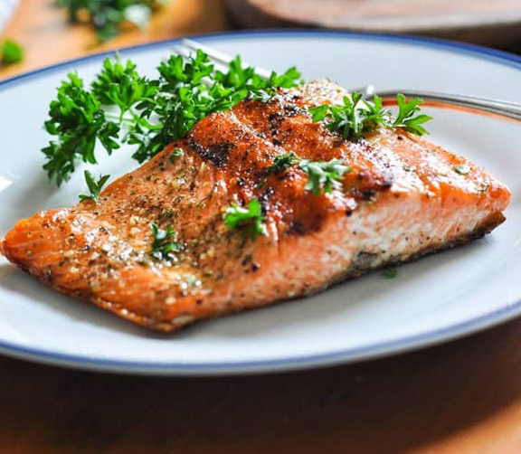
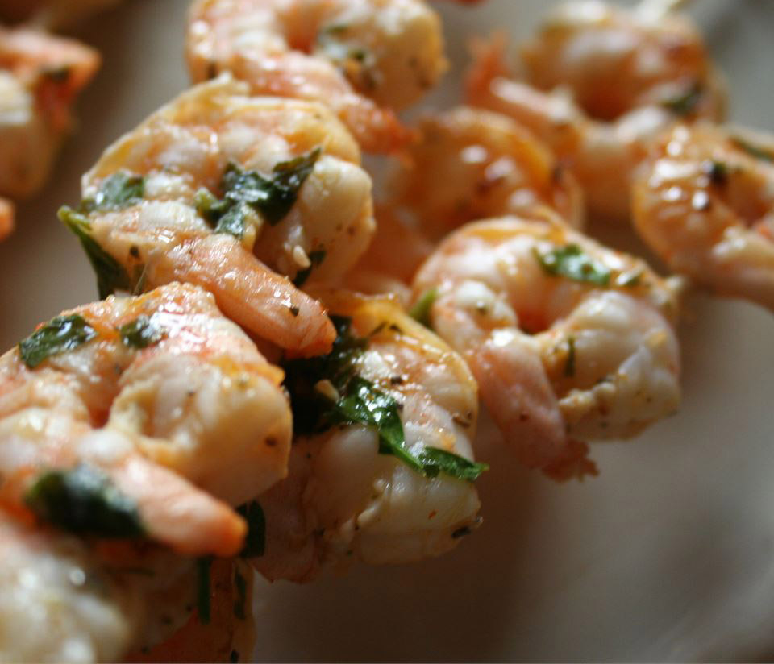
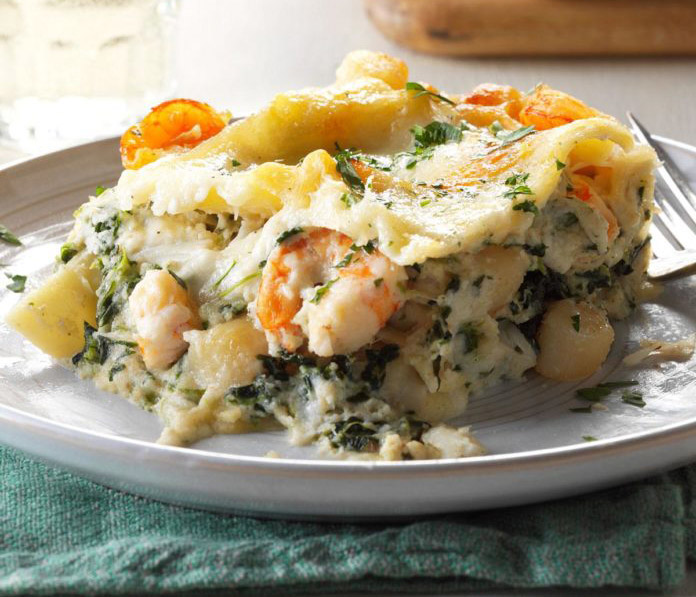
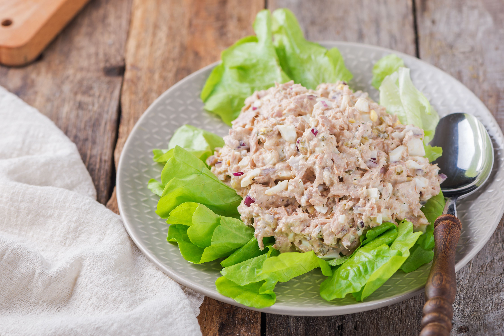

-

Grilled Salmon
×Grilled Salmon
Ingredients 1 1/2 pounds salmon fillets
lemon pepper to taste
garlic powder to taste
salt to taste
1/3 cup soy sauce
1/3 cup brown sugar
1/3 cup water
1/4 cup vegetable oilDirections Season salmon fillets with lemon pepper, garlic powder, and salt.
In a small bowl, stir together soy sauce, brown sugar, water, and vegetable oil until sugar is dissolved. Place fish in a large resealable plastic bag with the soy sauce mixture, seal, and turn to coat. Refrigerate for at least 2 hours
Preheat grill for medium heat.
Lightly oil grill grate. Place salmon on the preheated grill, and discard marinade. Cook salmon for 6 to 8 minutes per side, or until the fish flakes easily with a fork. -

Grilled Marinated Shrimp
×Grilled Marinated Shrimp
Ingredients 1 cup olive oil
¼ cup chopped fresh parsley
1 lemon, juiced
2 tablespoons hot pepper sauce
3 cloves garlic, minced
1 tablespoon tomato paste
2 teaspoons dried oregano
1 teaspoon salt
1 teaspoon ground black pepper
2 pounds large shrimp, peeled and deveined with tails attached
skewersDirections In a mixing bowl, mix together olive oil, parsley, lemon juice, hot sauce, garlic, tomato paste, oregano, salt, and black pepper. Reserve a small amount for basting later. Pour remaining marinade into a large resealable plastic bag with shrimp. Seal, and marinate in the refrigerator for 2 hours.
Preheat grill for medium-low heat. Thread shrimp onto skewers, piercing once near the tail and once near the head. Discard marinade.
Lightly oil grill grate. Cook shrimp for 5 minutes per side, or until opaque, basting frequently with reserved marinade. -

Seafood Lasagna
×Seafood Lasagna
Ingredients 1 (16 ounce) package lasagna noodles
2 tablespoons olive oil
1 clove garlic, minced
1 pound baby portobello mushrooms, sliced
2 (16 ounce) jars Alfredo-style pasta sauce
1 pound shrimp, peeled and deveined
1 pound bay scallops
1 pound imitation crabmeat, chopped
20 ounces ricotta cheese
1 egg
black pepper
6 cups shredded Italian cheese blendDirections Preheat oven to 350 degrees F (175 degrees C). Bring a large pot of lightly salted water to a boil. Add pasta and cook for 8 to 10 minutes or until al dente; drain.
Heat oil in a large saucepan over medium heat. Sautee garlic and mushrooms until tender. Pour in 2 jars Alfredo sauce. Stir in shrimp, scallops and crabmeat. Simmer 5 to 10 minutes, or until heated through. In a medium bowl, combine ricotta cheese, egg and pepper.
In a 9x13 inch baking dish, layer noodles, ricotta mixture, Alfredo mixture and shredded cheese. Repeat layers until all ingredients are used, ensuring that there is shredded cheese for the top.
Bake uncovered in preheated oven for 45 minutes. Cover, and bake 15 minutes. -

Tuna Salad with Chopped Eggs and Dill
×Tuna Salad with Chopped Eggs and Dill
Ingredients 2 (5- to 6-ounce) cans tuna (drained and flaked)
2 large hard-cooked eggs (chopped)
3 to 4 tablespoons mayonnaise
1 tablespoon dill relish
1/4 teaspoon dill weed (dried)
2 tablespoons red onion (finely chopped)
Kosher salt (to taste)
Freshly ground black pepper (to taste)Directions Gather the ingredients.
Combine the tuna, chopped eggs, 3 tablespoons of mayonnaise, the dill relish, dill weed, and onion. Add more mayonnaise, if necessary, and add salt and pepper, to taste.
Serve this tuna salad in sandwiches or buns or serve on lettuce leaves for a fabulous lunch.
Enjoy!